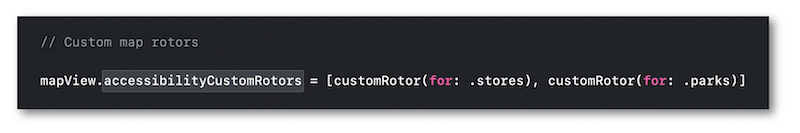

WWDC 2020: VoiceOver Efficiency with Custom Rotors
This video available on the official Apple website (session 10116) aims at introducing the different ways to create some rotor items in order to improve the VoiceOver user experience.
This rotor customization is a great accessibility feature that makes the navigation within complex interfaces and the selection of related elements pretty much easier.
Various contents and their video timelapse are indicated hereunder:
- CUSTOM ROTORS FOR MAPS
- CUSTOM ROTORS FOR TEXT
CUSTOM ROTORS FOR MAPS #
🎬 (01:13)
Using a one finger flick with the native VoiceOver system may vocalizes many useless graphical items before reaching the useful element that can't be obtained directly.

Reminder: when browsing all the displayed accessible elements in a page, VoiceOver will natively and automatically read from left to right and select the first item in the top left corner to the last one in the bottom right corner.
🎬 (04:03)
The best way to easily present elements that must be grouped in a specific category is to create customized rotor items...

... and implement their dedicated behaviors that will be triggered by the appropriate gesture.

🎬 (03:16)
Once created, the customized rotor items are available to select, vocalize and focus all the elements that belong to these proposed categories.

CUSTOM ROTORS FOR TEXT #
🎬 (06:07)
When reading some text that might contain any lines prefixed by icons that convey useful information, it's impossible to get directly the category of info related by the icon only using the native VoiceOver selections.

🎬 (07:41)
Let's improve the example in the Context tab following the same method used for maps but only with one single item whose aim will be to filter the alerts.
As usual when dealing with text, filtering consists of working with range and size for the final implementation.

🎬 (07:22)
Once the customized rotor item is created to filter the alerts, a flick up or down with one finger will give rise to the selection of the elements in the defined category.